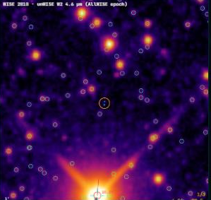
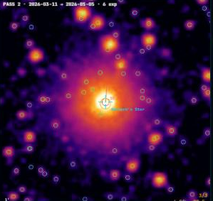
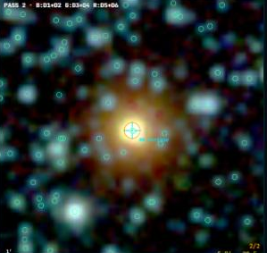
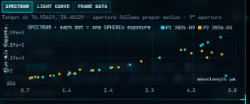

| Target | Why it matters | SPHEREx exposures | Result |
|---|---|---|---|
| Barnard's Star | fastest star in the sky | 239 | jumps 2.7′ vs WISE 2010 |
| WISE 0855−0714 | coldest known brown dwarf | 258 | detected S/N 10–14 in every pass at its predicted moving position |
| Epsilon Indi B | brown dwarf pair | 345 | tracked with proper motion |
| RW Aurigae | variable young star | 226 | spectrum + light curve |
| R Draconis | Mira variable | 413 | saturated core → PSF-wing photometry |